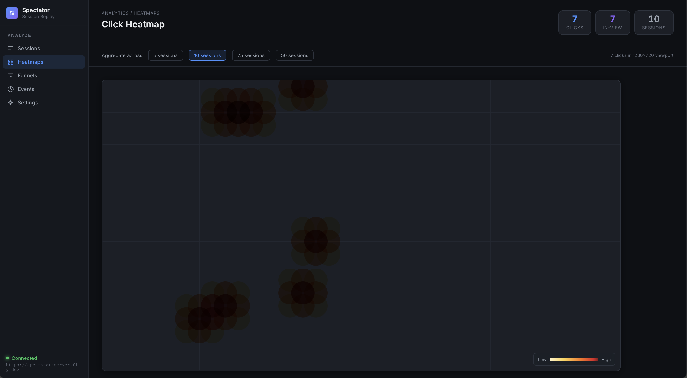
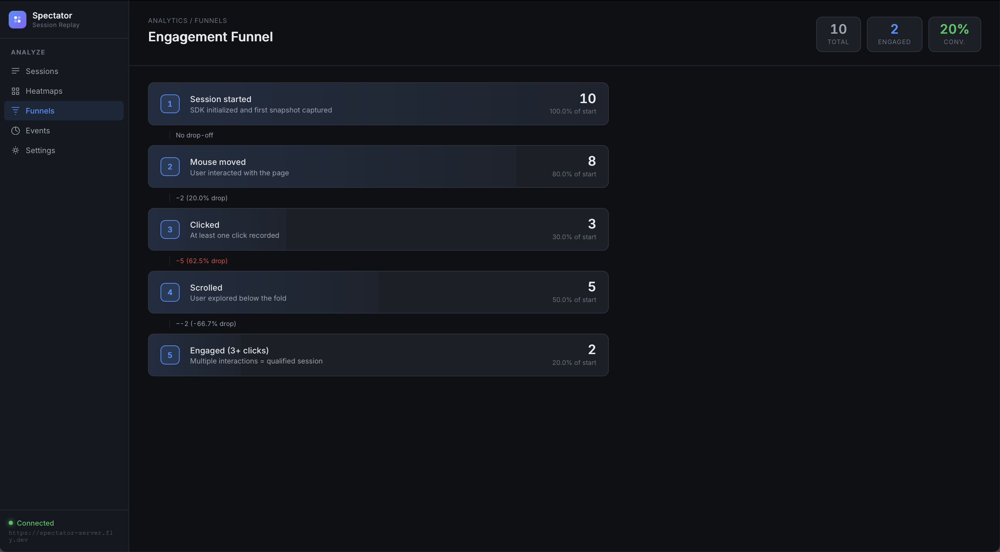
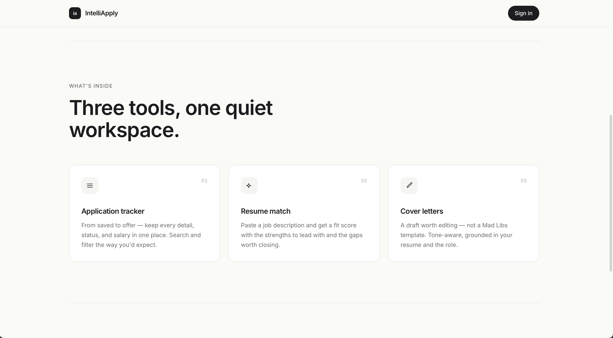
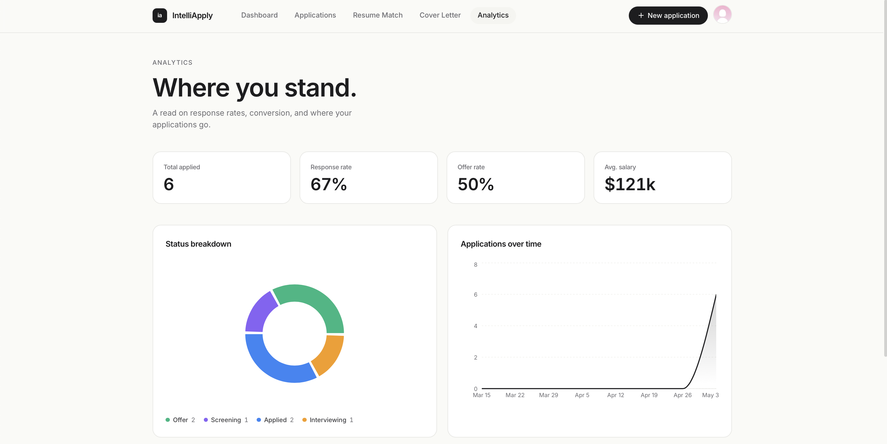

Software engineer. Frontend by trade, full-stack by habit.




Hodo Abdirizak is a software engineer who builds full products end to end. Frontend by trade, comfortable down through the stack.
She cares a lot about how things actually feel to use. Most of her co-op work has been on frontend teams, and the parts she ended up most invested in were the small judgment calls: how a button should respond, what wording keeps someone from getting stuck, when an empty state needs more than "no results." She's early in her career and still figuring a lot out, but that's the part of the work she keeps coming back to.
Recent work includes Spectator, a session replay engine built end-to-end to understand what tools like Fullstory and LogRocket are actually doing under the hood, and IntelliApply, a job-application workspace that scores resumes against job descriptions, surfaces strengths and gaps, and drafts tailored cover letters in seconds.
During her undergrad, she worked on product teams at GoDaddy, TD Bank, and the Global Solutions Team, and led the Women in Computer Science club at Toronto Metropolitan University as VP and then Co-President.
She graduated from Toronto Metropolitan University with a BSc in Computer Science (Co-op) in 2025.